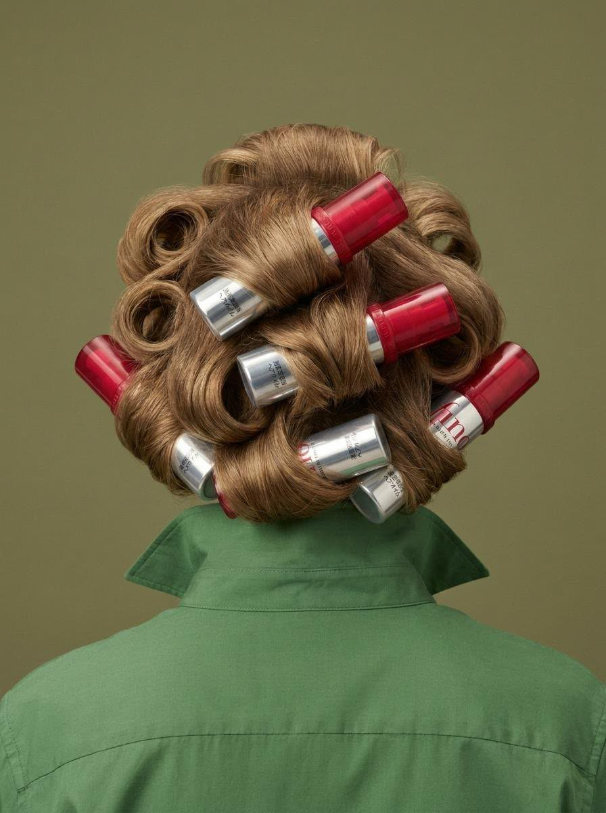

Surreal Beauty Product Hair Roller
PRP-003Prop stylingNano Banana Proby MaddoxAugust 16,

A playful and surreal commercial photography prompt where product tubes are used as oversized hair rollers in a high-end beauty aesthetic.
Prompt
Studio product photo shot from behind of a person with {argument name="hair color" default="light brown"} wavy/curled hair styled into large voluminous curls, viewed from the back of the head down to the shoulders. Multiple identical product tubes — {argument name="product" default="product from uploaded photo"} — are inserted into the hair like oversized velcro rollers/curlers, tucked between the curls at various angles all across the head, roughly 3-4 tubes visible, creating a playful surreal "product as hair roller" concept. The person wears a solid {argument name="shirt color" default="green"} collared top/shirt with a popped collar. Background is a flat, solid muted olive-green studio backdrop matching the tonal palette of the outfit. Even, soft studio lighting with minimal shadows, clean commercial beauty-photography look, slightly desaturated warm color grading. Composition is centered and vertical, tight crop from mid-shoulders up, no face visible — only the back of the head and hair. Photorealistic, high-end beauty/cosmetics advertising style, aspect ratio 3:4.Tags: product, 9:16 vertical